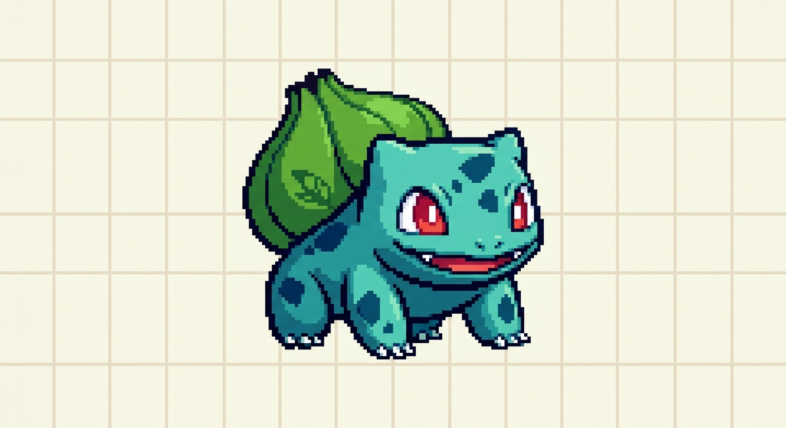

The Legend of Zelda: Ocarina of Time
Gènere: Acció, Aventura
Plataforma: Nintendo 64
Preu: 4199,99 €
Valoració: 10/10
Link viatja en el temps per aturar a Ganondorf. Un clàssic imprescindible.
Gènere: Acció, Aventura
Plataforma: Nintendo 64
Preu: 4199,99 €
Valoració: 10/10
Link viatja en el temps per aturar a Ganondorf. Un clàssic imprescindible.

Gènere: Acció, Aventura
Plataforma: Nintendo 64
Preu: 3149,99 €
Valoració: 9.5/10
Continuació directa d'Ocarina of Time, amb només tres dies per salvar Termina.

Gènere: Acció, Aventura
Plataforma: GameCube, Wii
Preu: 3000,00 €
Valoració: 9.8/10
La gran aventura de Link en el món de Hyrule.

Gènere: Acció
Plataforma: PC, Nintendo Switch 2, PS5
Preu: 500,00 €
Valoració: 9/10
Un joc d'acció amb elements de rol que combina la velocitat del shooter amb la profunditat del RPG.
Gènere: RPG, Acció
Plataforma: PS5, Xbox, PC
Preu: 59,99 €
Valoració: 9.6/10
Món obert de fantasia fosca creat per FromSoftware i George R. R. Martin.
Gènere: Esports
Plataforma: PS5, Xbox, PC
Preu: 19,99 €
Valoració: 8.5/10
Futbol amb cotxes: partides ràpides i competitives en línia.
Gènere: MMORPG
Plataforma: PC, Xbox
Preu: 24,99 €
Valoració: 9/10
Edició remasteritzada del clàssic d'estratègia en temps real.
Gènere: RPG
Plataforma: PS5, PC
Preu: 59,99 €
Valoració: 9.7/10
Aventura de rol per torns ambientada al món de Dungeons & Dragons.